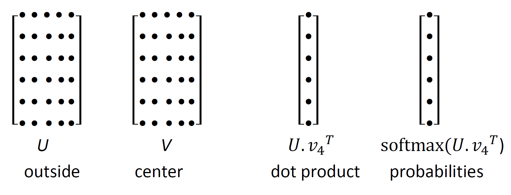

Lecture 2 - Word Vectors and Word Senses
| 상태 | Uploaded |
|---|---|
| 생성 일시 | |
| 최종 편집 일시 |
Introduction and Recap
- 단어를 벡터화 한 것은 단순히 유사도 계산을 용이하게 하는 것이 아니라, 실제 단어의 의미를 포착한다
Word Vectors, Analogies, and Applications
analogy()함수로 의미의 덧셈 뺄셈 등이 가능⇒ king → man = woman → ?
특정 벡터 (가장 유사한 단어 찾으면 queen)
⇒ autsralia → beer = france → ?
특정 벡터 (가장 유사한 단어 찾으면 champagne)
⇒ tall→ tallest= long→ ?
특정 벡터 (가장 유사한 단어 찾으면 longest)
- 이렇게 하다보면 하나의 단어에 여러 의미가 묶이는 경우도 생김
- e.g.) obama → clinton = reagan → ? 에서 nixon이 나옴
- 애초에 첫 비유가 모호했음
- 강의자는 클린턴과 닉슨이 모두 탄핵 위기였다는 점을 듦
- 또한 클린턴이 빌 클린턴인지 힐러리 클린턴인지 알 수 없음. 단어에 둘 모두 묶임.
- e.g.) obama → clinton = reagan → ? 에서 nixon이 나옴
- 이렇게 하다보면 하나의 단어에 여러 의미가 묶이는 경우도 생김
doesnt_match()함수를 이용해 여러 단어 중 다른 단어를 고를 수도 있음
- PCA를 통해 축소한 다음에 산포도를 그릴 수도 있음.
- PCA는 100차원을 2차원으로 줄이다 보니 정보량이 상당히 많이 소실된다는 점을 조심해야
Word2Vec and Contextual Predictions
- Word2Vec 알고리즘
- 반복적 업데이트를 통해 단어의 벡터표현을 익히는 알고리즘
- 센터 단어를 중심으로 맥락 단어들을 추정하는 방식
- Word2Vec 내 파라미터와 연산 구조
 - U 안에 있는 각 단어는 행으로 표현됨, 맥락을 의미하는 V와 내적 후 소프트맥스 적용
- ‘that’, ‘of’, ‘and’ 등 자주 발생하는 말은 내적 값이 높을 것이다
{kind=link}
- 고차원 벡터 공간에서는 비직관적인 결과가 많이 나오기도
- 어떠한 한 단어가 다른 여러 단어들과 서로 다른 여러 방향에서 가까울 수 있다
Negative Sampling and Optimization in Word2Vec
- 최적화
- Gradient Descent
- 갱신 함수
- 이때 는
step size혹은learning rate이라 한다
- 이때 는
- 근데 이 손실함수는 corpus 내 모든 window에 대한 함수이므로 연산량이 엄청 많음
- 갱신 함수
- Stochastic Gradient Descent
- window를 샘플링하여 연산량을 줄임 → 그래디언트를 추정한 후 파라미터 업데이트에 활용함
- 굉장히 noisy한 추정이지만 별로 중요하지 않음
실제로는? 32나 64 차원짜리 샘플을 따옴, 이 미니배치의 그래디언트를 추정함
→ 미니배치를 활용하여 평균했으므로 노이즈 감소, 병렬화 가능하므로 gpu 활용 可
- 워드 벡터를 활용한 SGD

- 비전 딥러닝 등과 다름
- 미니배치는 많아야 100~150개의 단어를 가지고 있을 것 (32짜리 배치, 윈도우 크기 10)
- 근데 총 어휘집은 단어 25만 개 정도
- 따라서 대부분의 벡터 내 대부분의 원소의 값은 0에 근접함
- 이러한 희소행렬 문제를 해결하려면, 실제로 등장하는 워드 벡터만을 업데이트 해야함.
- 즉, 특정 행만을 업데이트 하는 행렬 연산이 있어야 함. 또는 해시테이블 가지거나
- 두개의 벡터를 쓰는 것이 현실적으로 최적화하기 편함.
- 하나의 벡터만을 가지고 연산하면 center word기 두 번 나와서 제곱 나옴 →계산 복잡해짐
- Skip-Gram 모델 : center 단어를 통해 context 단어를 예측
- Continuous Bag of Words 모델 : context 단어를 통해 center 단어를 예측
- 이후는 과제 설명이긴 한데, 시그모이드 함수가 소프트맥스 함수의 binary version 이라는 점이 인상적
- Gradient Descent
- Negative Sampling:

- 정규화가 보통 너무 무거운 작업이라 word2vec 에서는
Negative Sampling을 활용한skip-gram모델이 구현됨
- 정규화가 보통 너무 무거운 작업이라 word2vec 에서는
Count-Based Methods, SVD, and GloVe
- Neural Networks 등장 전에는 단어 의미를 co-occurrence 행렬을 통해 포착
- Singular Value Decomposition (SVD)는 co-occurrence 행렬에서 차원 축소를 통해 단어 간 유사성을 포착
- GloVe는 count-based와 prediction-based 방법을 결합한 모델
- Log of co-occurrence probabilities를 사용해 단어 벡터 공간에서 선형적 관계를 표현
- 벡터 간 선형 관계는 유추 문제에서 중요한 역할을 함
- GloVe는 효율적인 학습을 위해 말뭉치 전체를 활용하고 계산 복잡도를 줄임
Evaluations and Word Sense Ambiguity
- Word Vectors의 성능은 intrinsic(유추 문제)와 extrinsic(실제 과제 성능) 평가로 나뉨
- Cosine similarity로 단어 벡터 간 유사성을 측정
- Word sense ambiguity(단어 의미 모호성) 문제: 한 벡터가 여러 의미를 혼합해 표현함
- 예: "Jaguar"는 자동차, 동물 등 여러 의미를 가짐
- Superposition Principle: 단어 벡터는 여러 의미의 가중 평균으로 나타남
- 희소한 의미 벡터를 sparse coding 기법으로 복원 가능
- 이를 통해 여러 가지 의미를 분리할 수 있음
Word Vectors in NLP and Conclusion
- Word Vectors는 Named Entity Recognition, Text Classification 등 다양한 NLP 과제에서 성능을 향상시킴
- Pre-trained word vectors는 다양한 NLP 시스템에서 재사용 가능
- Wikipedia와 같은 백과사전형 텍스트는 더 좋은 성능을 제공
- 말뭉치의 크기와 품질은 단어 벡터 성능에 큰 영향을 미침
- Word Vectors는 NLP에서 중요한 기술로 자리 잡음
- 고차원 벡터는 다양한 응용에서 성능을 크게 향상시킴